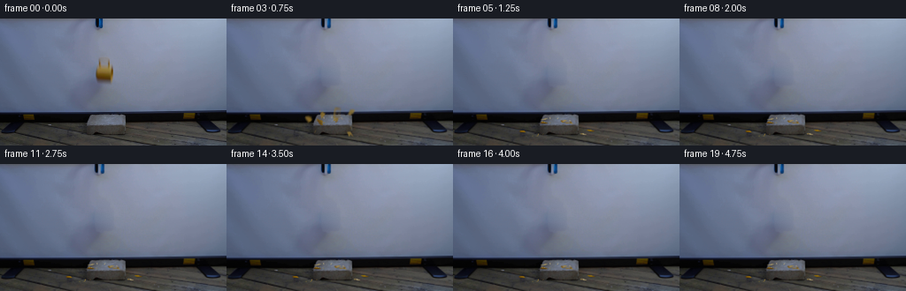
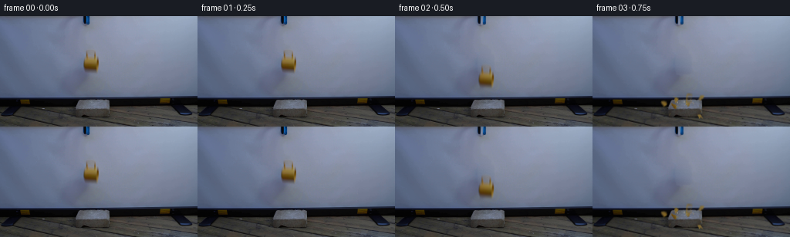
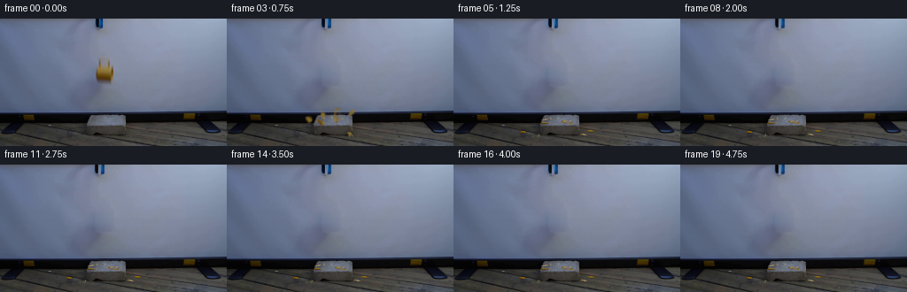

CODING AGENTS AS PIXEL WORLD MODELS
traex/GPT-6.1-Sol · 0125
点击播放 · 原生 RGB 像素
逐轮保存的候选
回放视频、检查图与代码变化。
每份候选均可单独播放。实际图片检查记录在下方工具轨迹中。
候选 01播放与检查图
点击播放 · 原生 RGB 像素


展开代码变化
--- 上一保存版本
+++ 本次保存版本
@@ -0,0 +1,266 @@
+from pathlib import Path
+import math
+import numpy as np
+import cv2
+from PIL import Image, ImageDraw
+import artifact_io
+
+ROOT = Path(__file__).resolve().parent
+W, H = 256, 144
+S = 3
+rng = np.random.default_rng(125)
+first = np.asarray(Image.open(ROOT / 'first_frame.png').convert('RGB'))
+
+# Recover the small moving foreground from the tinted, softly lit screen.
+def recover():
+ a = first.astype(np.float32)
+ clean = a.copy()
+ xl, xr, yt, yb = 105, 133, 39, 78
+ xx = np.arange(xl, xr + 1, dtype=np.float32)
+ pred = np.zeros((yb-yt+1, xr-xl+1, 3), np.float32)
+ for j, y in enumerate(range(yt, yb+1)):
+ left = np.mean(a[max(y-1, 0):y+2, xl-3:xl], (0, 1))
+ right = np.mean(a[max(y-1, 0):y+2, xr+1:xr+4], (0, 1))
+ f = (xx-xl+2)/(xr-xl+4)
+ pred[j] = left[None]*(1-f[:,None])+right[None]*f[:,None]
+ # Smoothly remove the object's exposure trail while retaining the screen grain.
+ region = a[yt:yb+1, xl:xr+1]
+ d = pred[:,:,2] - region[:,:,2]
+ yy, xx2 = np.mgrid[yt:yb+1, xl:xr+1]
+ shape = np.zeros(d.shape, np.uint8)
+ poly = np.array([(110,41),(125,41),(129,50),(131,60),(130,73),(125,77),(110,75),(106,67),(106,56)],np.int32)
+ cv2.fillPoly(shape,[poly-np.array([xl,yt])],255)
+ core=(d > 5).astype(np.uint8)*shape
+ erase = cv2.GaussianBlur(cv2.dilate(core, np.ones((3,3),np.uint8)),(5,5),0.65)/255
+ # A coherent source texture; no uncorrelated temporal noise.
+ noise = np.random.default_rng(31).normal(0,0.58,pred.shape[:2])[:,:,None]
+ clean[yt:yb+1,xl:xr+1] = region*(1-erase[:,:,None])+(pred+noise)*erase[:,:,None]
+ # The blue channel separates the mustard glaze from the blue-white backdrop.
+ alpha=np.clip((d-2)/(np.maximum(pred[:,:,2]-10,1)),0,1)
+ alpha *= shape/255
+ alpha[d<5]=0
+ fg = (region-pred*(1-alpha[:,:,None])) / np.maximum(alpha[:,:,None],0.02)
+ fg = np.clip(fg,0,255)
+ pm = fg*alpha[:,:,None]
+ sprite = np.dstack([pm,alpha*255]).astype(np.float32)
+ return clean, sprite, (xl,yt)
+
+clean, sprite, source_origin = recover()
+Image.fromarray(np.uint8(np.clip(clean,0,255))).save(ROOT/'.tmp/background.png')
+straight=np.zeros_like(sprite)
+straight[:,:,:3]=sprite[:,:,:3]/np.maximum(sprite[:,:,3:4]/255,0.0001)
+straight[:,:,3]=sprite[:,:,3]
+Image.fromarray(np.uint8(np.clip(straight,0,255)),'RGBA').save(ROOT/'.tmp/mug.png')
+
+# The edge visible at the top of the locked-off frame is the grabber.
+def opening_tool(t):
+ out = clean.copy()
+ q = np.clip((t-0.27)/0.16,0,1)
+ if q <= 0:
+ return out
+ top = first.astype(np.float32)
+ # Preserve the two differently coloured jaws, separating by a few pixels.
+ x0,x1=104,120
+ toolbg=np.empty((15,x1-x0+1,3),np.float32)
+ for y in range(15):
+ l=top[y,101:104].mean(0); r=top[y,121:124].mean(0)
+ f=np.linspace(0,1,x1-x0+1)[:,None]
+ toolbg[y]=l*(1-f)+r*f
+ residual=np.clip((toolbg.mean(2)-top[:15,x0:x1+1].mean(2)-4)/45,0,1)
+ residual[12:]=0
+ mask=cv2.GaussianBlur(residual,(3,3),0.45)
+ out[:15,x0:x1+1]=top[:15,x0:x1+1]*(1-mask[:,:,None])+toolbg*mask[:,:,None]
+ for lo,hi,dx in [(107,111,-1.0*q),(112,116,1.8*q)]:
+ layer=np.zeros((H,W,4),np.float32)
+ aa=mask[:,lo-x0:hi-x0+1]
+ layer[:15,lo:hi+1,:3]=top[:15,lo:hi+1]*aa[:,:,None]
+ layer[:15,lo:hi+1,3]=aa
+ shifted=cv2.warpAffine(layer,np.float32([[1,0,dx],[0,1,0]]),(W,H),flags=cv2.INTER_LINEAR)
+ out=out*(1-shifted[:,:,3:4])+shifted[:,:,:3]
+ return out
+
+# The object is only a few centimetres across; the fall takes a fraction of a second.
+RELEASE=.35
+GRAVITY=1750.0
+FALL=42.5
+IMPACT=RELEASE+math.sqrt(2*FALL/GRAVITY)
+CENTER=np.array([118.0,59.0])
+
+def affine_sprite(canvas, texture, origin, source_center, target_center, angle, squash=1., scale=1., shade=None):
+ ca,sa=math.cos(angle),math.sin(angle)
+ # Orthographic rotation and out-of-plane tumbling of a ceramic chip.
+ R=np.array([[ca,-sa*squash],[sa,ca*squash]],np.float32)*scale
+ translation=np.array(target_center)-R@(np.array(source_center)-np.array(origin))
+ M=np.column_stack((R,translation)).astype(np.float32)
+ tex=texture.copy()
+ if shade is not None:
+ tex[:,:,:3]*=shade
+ warped=cv2.warpAffine(tex,M,(W,H),flags=cv2.INTER_CUBIC,borderMode=cv2.BORDER_CONSTANT)
+ alpha=np.clip(warped[:,:,3:4]/255,0,1)
+ return canvas*(1-alpha)+np.maximum(warped[:,:,:3],0)
+
+# Tessellate the glazed cup wall into differently sized, irregular ceramic fragments.
+polys=[
+ [(109,56),(113,55),(115,60),(112,64),(109,66),(108,61)],
+ [(113,55),(119,55),(120,59),(117,63),(115,60)],
+ [(119,55),(124,55),(128,58),(128,62),(122,63),(120,59)],
+ [(109,66),(112,64),(115,60),(117,63),(119,66),(117,69),(112,69)],
+ [(117,63),(122,63),(123,67),(120,70),(117,69),(119,66)],
+ [(122,63),(128,62),(127,67),(123,70),(120,70),(123,67)],
+ [(111,45),(125,45),(125,56),(119,56),(113,55),(111,52)],
+]
+# velocities, final supporting plane, final in-plane angle, tumble, inside face
+settings=[
+ (-106,-98,129,.18,9,False),
+ (-47,-117,115,-.24,-10,True),
+ (94,-130,128,.10,12,False),
+ (-57,-49,119,.07,11,False),
+ (26,-66,117,-.17,-9,True),
+ (88,-35,132,.36,-11,True),
+ (35,-85,118,.12,9,False),
+]
+
+class Shard:
+ def __init__(self,points,setting,index):
+ self.p=np.array(points,np.float32)
+ self.c=self.p.mean(0)
+ self.vx,self.vy,self.surface,self.rest_angle,self.spin,self.inside=setting
+ self.index=index
+ lo=np.floor(self.p.min(0)-2).astype(int); hi=np.ceil(self.p.max(0)+2).astype(int)
+ self.origin=lo.astype(float)
+ ww,hh=hi-lo+1
+ # Supersampled edges carry the original glaze texture.
+ yy,xx=np.mgrid[0:hh*S,0:ww*S].astype(np.float32)
+ xx=xx/S+lo[0]-source_origin[0]
+ yy=yy/S+lo[1]-source_origin[1]
+ src=cv2.remap(straight,xx.astype(np.float32),yy.astype(np.float32),cv2.INTER_CUBIC,borderMode=cv2.BORDER_CONSTANT)
+ polygon=np.zeros((hh*S,ww*S),np.uint8)
+ cv2.fillPoly(polygon,[np.round((self.p-lo)*S).astype(np.int32)],255)
+ sourcealpha=np.clip(src[:,:,3]/255,0,1)
+ if index==6:
+ aa=sourcealpha**.8 * polygon/255
+ else:
+ aa=np.minimum(1,sourcealpha*1.35)*polygon/255
+ color=src[:,:,:3]
+ # Smooth convex shading and subdued sensor texture.
+ glaze=np.array([123.,88.,12.])
+ color=.72*color+.28*glaze
+ color[:,:,0]=np.maximum(color[:,:,0],77)
+ color[:,:,1]=np.maximum(color[:,:,1],49)
+ color[:,:,2]=np.maximum(color[:,:,2],5)
+ tex=np.dstack((color*aa[:,:,None],aa*255))
+ self.tex=cv2.resize(tex,(ww,hh),interpolation=cv2.INTER_AREA)
+ self.start=self.c+np.array([0,FALL])
+ self.groundhalf=1.0 if index==6 else 1.35
+ end_y=self.surface-self.groundhalf
+ self.flight=(-self.vy+math.sqrt(self.vy*self.vy+2*GRAVITY*max(end_y-self.start[1],.1)))/GRAVITY
+ self.hitx=self.start[0]+self.vx*self.flight
+ self.restsquash=.21 if index!=6 else .28
+ def draw(self,canvas,dt):
+ if dt < 0: return canvas
+ if dt < self.flight:
+ center=self.start+np.array([self.vx*dt,self.vy*dt+.5*GRAVITY*dt*dt])
+ angle=self.spin*dt
+ squash=.55+.45*abs(math.cos(self.spin*dt*.7))
+ face=.5*(1-math.cos(self.spin*dt*.8))
+ else:
+ u=dt-self.flight
+ # Small damped contact bounces followed by sliding/rocking.
+ slide=self.vx*.085*(1-math.exp(-u/.17))
+ bounce=(1.9 if self.index in (0,2,5) else 1.1)*math.exp(-u*9)*abs(math.sin(19*u))
+ center=np.array([self.hitx+slide,self.surface-self.groundhalf-bounce])
+ blend=1-math.exp(-u*14)
+ angle=self.spin*self.flight*(1-blend)+self.rest_angle*blend
+ squash=self.restsquash+( .55+.45*abs(math.cos(self.spin*self.flight*.7))-self.restsquash)*(1-blend)
+ face=(float(self.inside)*blend + .5*(1-math.cos(self.spin*self.flight*.8))*(1-blend))
+ face*=np.clip(dt/.08,0,1)
+ tex=self.tex.copy()
+ alpha=tex[:,:,3:4]/255
+ # Some pieces roll over, revealing a warmer off-white unglazed inner surface.
+ inner=np.array([151,141,110],np.float32)
+ tex[:,:,:3]=tex[:,:,:3]*(1-face*.88)+inner*alpha*(face*.88)
+ return affine_sprite(canvas,tex,self.origin,self.c,center,angle,squash,shade=.94+.06*math.cos(angle))
+
+shards=[Shard(p,z,i) for i,(p,z) in enumerate(zip(polys,settings))]
+
+# Tiny additional chips of the same ceramic, with deterministic trajectories.
+chips=[]
+for k in range(11):
+ cx=118+rng.uniform(-7,8); cy=FALL+rng.uniform(60,67)
+ vx=rng.uniform(-115,115); vy=rng.uniform(-145,-38)
+ surface=rng.uniform(125,134) if abs(vx)>65 else rng.uniform(113,120)
+ tf=(-vy+math.sqrt(vy*vy+2*GRAVITY*max(surface-cy,.1)))/GRAVITY
+ chips.append((cx,cy,vx,vy,surface,tf,rng.uniform(.45,1.1),rng.uniform(0,math.pi)))
+
+def draw_chips(canvas,dt):
+ if dt<.015:return canvas
+ out=Image.fromarray(np.uint8(np.clip(canvas,0,255))).resize((W*S,H*S),Image.Resampling.BICUBIC)
+ dr=ImageDraw.Draw(out)
+ for k,(cx,cy,vx,vy,sy,tf,r,rot) in enumerate(chips):
+ if dt<tf:
+ x=cx+vx*dt;y=cy+vy*dt+.5*GRAVITY*dt*dt
+ ang=rot+dt*(12+k)
+ else:
+ u=dt-tf
+ x=cx+vx*tf+vx*.026*(1-math.exp(-u*12))
+ y=sy-.4-.5*math.exp(-u*12)*abs(math.sin(u*20))
+ ang=rot
+ ca,sa=math.cos(ang),math.sin(ang)
+ p=np.array([[-r,-r*.35],[r,-r*.2],[r*.15,r*.52]])
+ R=np.array([[ca,-sa],[sa,ca]])
+ p=p@R.T+np.array([x,y])
+ col=(144,117,51) if k%3 else (166,153,118)
+ dr.polygon([tuple(v*S) for v in p],fill=col)
+ return np.array(out.resize((W,H),Image.Resampling.LANCZOS)).astype(np.float32)
+
+
+def shadow(canvas,x,y,rx,ry,strength):
+ yy,xx=np.mgrid[:H,:W]
+ a=strength*np.exp(-((xx-x)/rx)**2-((yy-y)/ry)**2)
+ return canvas*(1-a[:,:,None])
+
+def render(t):
+ if t<RELEASE:
+ # The entire initial scene remains fixed until the grabber lets go.
+ return first.astype(np.float32)
+ out=opening_tool(t)
+ dt=t-RELEASE
+ if t<IMPACT:
+ dy=.5*GRAVITY*dt*dt
+ x=118+1.4*dt
+ angle=.10*dt
+ out=shadow(out,118,112,9,1.7,.11+.11*dy/FALL)
+ out=affine_sprite(out,sprite,source_origin,CENTER,(x,59+dy),angle)
+ else:
+ age=t-IMPACT
+ # Stable soft contact shadows on the top of the concrete and on the table.
+ for piece in shards:
+ if age>=piece.flight:
+ u=age-piece.flight
+ sx=piece.hitx+piece.vx*.085*(1-math.exp(-u/.17))
+ out=shadow(out,sx,piece.surface+.1,3.0 if piece.index!=6 else 4.8,.65,.20*np.clip(u/.07,0,1))
+ # Back-to-front layering avoids pieces popping in front of nearer debris.
+ for p in sorted(shards,key=lambda s:s.surface):
+ out=p.draw(out,age)
+ out=draw_chips(out,age)
+ return out
+
+
+def main():
+ (ROOT/'.tmp').mkdir(exist_ok=True)
+ frames=[first.copy()]
+ for i in range(1,20):
+ t=i/4
+ if t<RELEASE:
+ frame=first.copy()
+ else:
+ # Short fixed exposure: gravity and fast fragments retain photographic blur.
+ samples=[render(t+e) for e in np.linspace(-.005,.005,5)]
+ frame=np.uint8(np.clip(np.mean(samples,0),0,255).round())
+ frames.append(frame)
+ frames=np.stack(frames)
+ artifact_io.save(frames,ROOT)
+ np.save(ROOT/'.tmp/candidate.npy',frames)
+
+if __name__=='__main__':
+ main()
候选 02播放与检查图
点击播放 · 原生 RGB 像素

展开代码变化
--- 上一保存版本
+++ 本次保存版本
@@ -6,6 +6,7 @@
import artifact_io
ROOT = Path(__file__).resolve().parent
+(ROOT / '.tmp').mkdir(exist_ok=True)
W, H = 256, 144
S = 3
rng = np.random.default_rng(125)
@@ -50,7 +51,7 @@
straight=np.zeros_like(sprite)
straight[:,:,:3]=sprite[:,:,:3]/np.maximum(sprite[:,:,3:4]/255,0.0001)
straight[:,:,3]=sprite[:,:,3]
-Image.fromarray(np.uint8(np.clip(straight,0,255)),'RGBA').save(ROOT/'.tmp/mug.png')
+Image.fromarray(np.uint8(np.clip(straight,0,255))).save(ROOT/'.tmp/mug.png')
# The edge visible at the top of the locked-off frame is the grabber.
def opening_tool(t):
@@ -194,7 +195,7 @@
def draw_chips(canvas,dt):
if dt<.015:return canvas
- out=Image.fromarray(np.uint8(np.clip(canvas,0,255))).resize((W*S,H*S),Image.Resampling.BICUBIC)
+ out=Image.new('RGBA',(W*S,H*S),(0,0,0,0))
dr=ImageDraw.Draw(out)
for k,(cx,cy,vx,vy,sy,tf,r,rot) in enumerate(chips):
if dt<tf:
@@ -210,8 +211,10 @@
R=np.array([[ca,-sa],[sa,ca]])
p=p@R.T+np.array([x,y])
col=(144,117,51) if k%3 else (166,153,118)
- dr.polygon([tuple(v*S) for v in p],fill=col)
- return np.array(out.resize((W,H),Image.Resampling.LANCZOS)).astype(np.float32)
+ dr.polygon([tuple(v*S) for v in p],fill=col+(255,))
+ overlay=np.array(out.resize((W,H),Image.Resampling.LANCZOS)).astype(np.float32)
+ aa=overlay[:,:,3:4]/255
+ return canvas*(1-aa)+overlay[:,:,:3]*aa
def shadow(canvas,x,y,rx,ry,strength):
可观测工具轨迹
实际执行的命令与返回图片。
命令 1exit 0
/bin/bash -lc 'ls -la && cat prompt.txt && cat GENERATION_RULES.md'
命令 2exit 0
/bin/bash -lc "cat artifact_io.py && python - <<'PY'
from PIL import Image
import numpy as np
im=np.array(Image.open('first_frame.png'))
print(im.shape)
for y in range(0,144,4):
row=''
for x in range(0,256,4):
r,g,b=im[y:y+4,x:x+4].mean((0,1))
if r>g*1.2 and g>b*1.2 and r>100:c='Y'
elif b>r*1.2 and b>g*1.03:c='B'
elif max(r,g,b)<40:c='#'
elif max(r,g,b)<80:c='O'
elif max(r,g,b)<120:c='o'
elif max(r,g,b)<160:c=':'
elif max(r,g,b)<200:c='.'
else:c=' '
row+=c
print('%03d '%y+row)
PY"命令 3exit 0
/bin/bash -lc "python - <<'PY'
from PIL import Image
import numpy as np
im=np.array(Image.open('first_frame.png'))
for xy in [(0,0),(60,40),(150,70),(250,100),(110,40),(120,65),(117,85),(120,110),(117,118),(80,140)]:
x,y=xy;print(xy,im[y,x])
for y in range(0,144,2):
row=''
for x in range(0,256,2):
r,g,b=im[y:y+2,x:x+2].mean((0,1)); v=(r+g+b)/3
if r>g*1.17 and g>b*1.22 and r>90:c='Y' if v>90 else 'y'
elif r>g*1.14 and r>b*1.08:c='R'
elif b>r*1.2 and b>g*1.10:c='b' if v<75 else 'B'
elif v<30:c='#'
elif v<55:c='O'
elif v<80:c='o'
elif v<105:c=':'
elif v<135:c='.'
elif v<170:c='-'
elif v<205:c=' '
else:c=' '
row+=c
print('%03d '%y+row)
PY"命令 4exit 0
/bin/bash -lc "python - <<'PY'
import numpy as np
from PIL import Image
im=np.array(Image.open('first_frame.png')).astype(float)
for y in range(0,100,2):
print(f'{y:3}:', ' '.join('%3d'%x for x in im[y,104:138:2].mean(1)), 'RGB114',im[y,114].astype(int),'RGB124',im[y,124].astype(int))
print('color region:')
for y in range(32,76):
print(f'{y:3}:',' '.join('%02x%02x%02x'%tuple(x) for x in im.astype(np.uint8)[y,105:132]))
PY"命令 5exit 0
/bin/bash -lc "python - <<'PY'
from PIL import Image
import numpy as np
im=np.array(Image.open('first_frame.png'))
cs=' .,:;i1tfLCG08@'
print('TOP grey x100:130')
for y in range(24):
print(f'{y:02}:',''.join(cs[min(len(cs)-1,int(v/256*len(cs)))] for v in im[y,100:132].mean(1)),list(map(tuple,im[y,107:118])))
print('middle brightness x95:145')
for y in range(30,100):
print(f'{y:02}:',''.join(cs[min(len(cs)-1,int(v/256*len(cs)))] for v in im[y,95:145].mean(1)))
print('block x80:151')
for y in range(104,136):
print(f'{y:03}:',''.join(cs[min(len(cs)-1,int(v/256*len(cs)))] for v in im[y,80:151].mean(1)))
PY"命令 6exit 0
/bin/bash -lc "python - <<'PY'
import numpy as np
from PIL import Image
A=np.array(Image.open('first_frame.png')).astype(float)
for y in range(30,80):
s=''
for x in range(100,138):
r,g,b=A[y,x]
if r-b>40:s+='Y'
elif r-b>10:s+='y'
elif r-b>-5:s+='o'
elif r-b>-15:s+='.'
else:s+=' '
print(f'{y:02} '+s)
print('ground colors')
for y in range(105,132,2):
print(y,[(x,A[y,x].astype(int).tolist()) for x in range(94,145,5)])
PY"命令 7exit 0
/bin/bash -lc "python - <<'PY'
from PIL import Image
import numpy as np
A=np.array(Image.open('first_frame.png'))
for y in range(35,105,5):
print(y,[(x,A[y,x].tolist()) for x in [65,75,85,95,100,105,110,115,120,125,130,135,140,150,160,170,180]])
print('yellow bbox')
m=(A[:,:,0].astype(int)-A[:,:,2]>35)&(np.indices(A.shape[:2])[0]<100)
y,x=np.where(m);print(x.min(),x.max(),y.min(),y.max())
PY"命令 8exit 0
/bin/bash -lc "python - <<'PY'
import scipy,cv2
print('scipy',scipy.__version__,'cv2',cv2.__version__)
from PIL import Image
import numpy as np
A=np.array(Image.open('first_frame.png')).astype(float)
# display color residual from linear bkg interpolator
for y in range(40,77):
row=''
for x in range(104,134):
bg=A[y,104]*(133-x)/29+A[y,133]*(x-104)/29
d=bg[2]-A[y,x,2]
row+=' .:-=+*#%@'[int(np.clip(d/130*9,0,9))]
print(f'{y:02} '+row)
PY"命令 9exit 0
/bin/bash -lc "cat > generate.py <<'PY'
from pathlib import Path
import math
import numpy as np
import cv2
from PIL import Image, ImageDraw
import artifact_io
ROOT = Path(__file__).resolve().parent
W, H = 256, 144
S = 3
rng = np.random.default_rng(125)
first = np.asarray(Image.open(ROOT / 'first_frame.png').convert('RGB'))
# Recover the small moving foreground from the tinted, softly lit screen.
def recover():
a = first.astype(np.float32)
clean = a.copy()
xl, xr, yt, yb = 105, 133, 39, 78
xx = np.arange(xl, xr + 1, dtype=np.float32)
pred = np.zeros((yb-yt+1, xr-xl+1, 3), np.float32)
for j, y in enumerate(range(yt, yb+1)):
left = np.mean(a[max(y-1, 0):y+2, xl-3:xl], (0, 1))
right = np.mean(a[max(y-1, 0):y+2, xr+1:xr+4], (0, 1))
f = (xx-xl+2)/(xr-xl+4)
pred[j] = left[None]*(1-f[:,None])+right[None]*f[:,None]
# Smoothly remove the object's exposure trail while retaining the screen grain.
region = a[yt:yb+1, xl:xr+1]
d = pred[:,:,2] - region[:,:,2]
yy, xx2 = np.mgrid[yt:yb+1, xl:xr+1]
shape = np.zeros(d.shape, np.uint8)
poly = np.array([(110,41),(125,41),(129,50),(131,60),(130,73),(125,77),(110,75),(106,67),(106,56)],np.int32)
cv2.fillPoly(shape,[poly-np.array([xl,yt])],255)
core=(d > 5).astype(np.uint8)*shape
erase = cv2.GaussianBlur(cv2.dilate(core, np.ones((3,3),np.uint8)),(5,5),0.65)/255
# A coherent source texture; no uncorrelated temporal noise.
noise = np.random.default_rng(31).normal(0,0.58,pred.shape[:2])[:,:,None]
clean[yt:yb+1,xl:xr+1] = region*(1-erase[:,:,None])+(pred+noise)*erase[:,:,None]
# The blue channel separates the mustard glaze from the blue-white backdrop.
alpha=np.clip((d-2)/(np.maximum(pred[:,:,2]-10,1)),0,1)
alpha *= shape/255
alpha[d<5]=0
fg = (region-pred*(1-alpha[:,:,None])) / np.maximum(alpha[:,:,None],0.02)
fg = np.clip(fg,0,255)
pm = fg*alpha[:,:,None]
sprite = np.dstack([pm,alpha*255]).astype(np.float32)
return clean, sprite, (xl,yt)
clean, sprite, source_origin = recover()
Image.fromarray(np.uint8(np.clip(clean,0,255))).save(ROOT/'.tmp/background.png')
straight=np.zeros_like(sprite)
straight[:,:,:3]=sprite[:,:,:3]/np.maximum(sprite[:,:,3:4]/255,0.0001)
straight[:,:,3]=sprite[:,:,3]
Image.fromarray(np.uint8(np.clip(straight,0,255)),'RGBA').save(ROOT/'.tmp/mug.png')
PY
python generate.py"命令 10exit 1
/bin/bash -lc "cat >> generate.py <<'PY'
# The edge visible at the top of the locked-off frame is the grabber.
def opening_tool(t):
out = clean.copy()
q = np.clip((t-0.27)/0.16,0,1)
if q <= 0:
return out
top = first.astype(np.float32)
# Preserve the two differently coloured jaws, separating by a few pixels.
x0,x1=104,120
toolbg=np.empty((15,x1-x0+1,3),np.float32)
for y in range(15):
l=top[y,101:104].mean(0); r=top[y,121:124].mean(0)
f=np.linspace(0,1,x1-x0+1)[:,None]
toolbg[y]=l*(1-f)+r*f
residual=np.clip((toolbg.mean(2)-top[:15,x0:x1+1].mean(2)-4)/45,0,1)
residual[12:]=0
mask=cv2.GaussianBlur(residual,(3,3),0.45)
out[:15,x0:x1+1]=top[:15,x0:x1+1]*(1-mask[:,:,None])+toolbg*mask[:,:,None]
for lo,hi,dx in [(107,111,-1.0*q),(112,116,1.8*q)]:
layer=np.zeros((H,W,4),np.float32)
aa=mask[:,lo-x0:hi-x0+1]
layer[:15,lo:hi+1,:3]=top[:15,lo:hi+1]*aa[:,:,None]
layer[:15,lo:hi+1,3]=aa
shifted=cv2.warpAffine(layer,np.float32([[1,0,dx],[0,1,0]]),(W,H),flags=cv2.INTER_LINEAR)
out=out*(1-shifted[:,:,3:4])+shifted[:,:,:3]
return out
# The object is only a few centimetres across; the fall takes a fraction of a second.
RELEASE=.35
GRAVITY=1750.0
FALL=42.5
IMPACT=RELEASE+math.sqrt(2*FALL/GRAVITY)
CENTER=np.array([118.0,59.0])
def affine_sprite(canvas, texture, origin, source_center, target_center, angle, squash=1., scale=1., shade=None):
ca,sa=math.cos(angle),math.sin(angle)
# Orthographic rotation and out-of-plane tumbling of a ceramic chip.
R=np.array([[ca,-sa*squash],[sa,ca*squash]],np.float32)*scale
translation=np.array(target_center)-R@(np.array(source_center)-np.array(origin))
M=np.column_stack((R,translation)).astype(np.float32)
tex=texture.copy()
if shade is not None:
tex[:,:,:3]*=shade
warped=cv2.warpAffine(tex,M,(W,H),flags=cv2.INTER_CUBIC,borderMode=cv2.BORDER_CONSTANT)
alpha=np.clip(warped[:,:,3:4]/255,0,1)
return canvas*(1-alpha)+np.maximum(warped[:,:,:3],0)
# Tessellate the glazed cup wall into differently sized, irregular ceramic fragments.
polys=[
[(109,56),(113,55),(115,60),(112,64),(109,66),(108,61)],
[(113,55),(119,55),(120,59),(117,63),(115,60)],
[(119,55),(124,55),(128,58),(128,62),(122,63),(120,59)],
[(109,66),(112,64),(115,60),(117,63),(119,66),(117,69),(112,69)],
[(117,63),(122,63),(123,67),(120,70),(117,69),(119,66)],
[(122,63),(128,62),(127,67),(123,70),(120,70),(123,67)],
[(111,45),(125,45),(125,56),(119,56),(113,55),(111,52)],
]
# velocities, final supporting plane, final in-plane angle, tumble, inside face
settings=[
(-106,-98,129,.18,9,False),
(-47,-117,115,-.24,-10,True),
(94,-130,128,.10,12,False),
(-57,-49,119,.07,11,False),
(26,-66,117,-.17,-9,True),
(88,-35,132,.36,-11,True),
(35,-85,118,.12,9,False),
]
class Shard:
def __init__(self,points,setting,index):
self.p=np.array(points,np.float32)
self.c=self.p.mean(0)
self.vx,self.vy,self.surface,self.rest_angle,self.spin,self.inside=setting
self.index=index
lo=np.floor(self.p.min(0)-2).astype(int); hi=np.ceil(self.p.max(0)+2).astype(int)
self.origin=lo.astype(float)
ww,hh=hi-lo+1
# Supersampled edges carry the original glaze texture.
yy,xx=np.mgrid[0:hh*S,0:ww*S].astype(np.float32)
xx=xx/S+lo[0]-source_origin[0]
yy=yy/S+lo[1]-source_origin[1]
src=cv2.remap(straight,xx,yy,cv2.INTER_CUBIC,borderMode=cv2.BORDER_CONSTANT)
polygon=np.zeros((hh*S,ww*S),np.uint8)
cv2.fillPoly(polygon,[np.round((self.p-lo)*S).astype(np.int32)],255)
sourcealpha=np.clip(src[:,:,3]/255,0,1)
if index==6:
aa=sourcealpha**.8 * polygon/255
else:
aa=np.minimum(1,sourcealpha*1.35)*polygon/255
color=src[:,:,:3]
# Smooth convex shading and subdued sensor texture.
glaze=np.array([123.,88.,12.])
color=.72*color+.28*glaze
color[:,:,0]=np.maximum(color[:,:,0],77)
color[:,:,1]=np.maximum(color[:,:,1],49)
color[:,:,2]=np.maximum(color[:,:,2],5)
tex=np.dstack((color*aa[:,:,None],aa*255))
self.tex=cv2.resize(tex,(ww,hh),interpolation=cv2.INTER_AREA)
self.start=self.c+np.array([0,FALL])
self.groundhalf=1.0 if index==6 else 1.35
end_y=self.surface-self.groundhalf
self.flight=(-self.vy+math.sqrt(self.vy*self.vy+2*GRAVITY*max(end_y-self.start[1],.1)))/GRAVITY
self.hitx=self.start[0]+self.vx*self.flight
self.restsquash=.21 if index"'!=6 else .28
def draw(self,canvas,dt):
if dt < 0: return canvas
if dt < self.flight:
center=self.start+np.array([self.vx*dt,self.vy*dt+.5*GRAVITY*dt*dt])
angle=self.spin*dt
squash=.55+.45*abs(math.cos(self.spin*dt*.7))
face=.5*(1-math.cos(self.spin*dt*.8))
else:
u=dt-self.flight
# Small damped contact bounces followed by sliding/rocking.
slide=self.vx*.085*(1-math.exp(-u/.17))
bounce=(1.9 if self.index in (0,2,5) else 1.1)*math.exp(-u*9)*abs(math.sin(19*u))
center=np.array([self.hitx+slide,self.surface-self.groundhalf-bounce])
blend=1-math.exp(-u*14)
angle=self.spin*self.flight*(1-blend)+self.rest_angle*blend
squash=self.restsquash+( .55+.45*abs(math.cos(self.spin*self.flight*.7))-self.restsquash)*(1-blend)
face=(float(self.inside)*blend + .5*(1-math.cos(self.spin*self.flight*.8))*(1-blend))
face*=np.clip(dt/.08,0,1)
tex=self.tex.copy()
alpha=tex[:,:,3:4]/255
# Some pieces roll over, revealing a warmer off-white unglazed inner surface.
inner=np.array([151,141,110],np.float32)
tex[:,:,:3]=tex[:,:,:3]*(1-face*.88)+inner*alpha*(face*.88)
return affine_sprite(canvas,tex,self.origin,self.c,center,angle,squash,shade=.94+.06*math.cos(angle))
shards=[Shard(p,z,i) for i,(p,z) in enumerate(zip(polys,settings))]
# Tiny additional chips of the same ceramic, with deterministic trajectories.
chips=[]
for k in range(11):
cx=118+rng.uniform(-7,8); cy=FALL+rng.uniform(60,67)
vx=rng.uniform(-115,115); vy=rng.uniform(-145,-38)
surface=rng.uniform(125,134) if abs(vx)>65 else rng.uniform(113,120)
tf=(-vy+math.sqrt(vy*vy+2*GRAVITY*max(surface-cy,.1)))/GRAVITY
chips.append((cx,cy,vx,vy,surface,tf,rng.uniform(.45,1.1),rng.uniform(0,math.pi)))
def draw_chips(canvas,dt):
if dt<.015:return canvas
out=Image.fromarray(np.uint8(np.clip(canvas,0,255))).resize((W*S,H*S),Image.Resampling.BICUBIC)
dr=ImageDraw.Draw(out)
for k,(cx,cy,vx,vy,sy,tf,r,rot) in enumerate(chips):
if dt<tf:
x=cx+vx*dt;y=cy+vy*dt+.5*GRAVITY*dt*dt
ang=rot+dt*(12+k)
else:
u=dt-tf
x=cx+vx*tf+vx*.026*(1-math.exp(-u*12))
y=sy-.4-.5*math.exp(-u*12)*abs(math.sin(u*20))
ang=rot
ca,sa=math.cos(ang),math.sin(ang)
p=np.array([[-r,-r*.35],[r,-r*.2],[r*.15,r*.52]])
R=np.array([[ca,-sa],[sa,ca]])
p=p@R.T+np.array([x,y])
col=(144,117,51) if k%3 else (166,153,118)
dr.polygon([tuple(v*S) for v in p],fill=col)
return np.array(out.resize((W,H),Image.Resampling.LANCZOS)).astype(np.float32)
def shadow(canvas,x,y,rx,ry,strength):
yy,xx=np.mgrid[:H,:W]
a=strength*np.exp(-((xx-x)/rx)**2-((yy-y)/ry)**2)
return canvas*(1-a[:,:,None])
def render(t):
if t<RELEASE:
# The entire initial scene remains fixed until the grabber lets go.
return first.astype(np.float32)
out=opening_tool(t)
dt=t-RELEASE
if t<IMPACT:
dy=.5*GRAVITY*dt*dt
x=118+1.4*dt
angle=.10*dt
out=shadow(out,118,112,9,1.7,.11+.11*dy/FALL)
out=affine_sprite(out,sprite,source_origin,CENTER,(x,59+dy),angle)
else:
age=t-IMPACT
# Stable soft contact shadows on the top of the concrete and on the table.
for piece in shards:
if age>=piece.flight:
u=age-piece.flight
sx=piece.hitx+piece.vx*.085*(1-math.exp(-u/.17))
out=shadow(out,sx,piece.surface+.1,3.0 if piece.index!=6 else 4.8,.65,.20*np.clip(u/.07,0,1))
# Back-to-front layering avoids pieces popping in front of nearer debris.
for p in sorted(shards,key=lambda s:s.surface):
out=p.draw(out,age)
out=draw_chips(out,age)
return out
def main():
(ROOT/'"'.tmp').mkdir(exist_ok=True)
frames=[first.copy()]
for i in range(1,20):
t=i/4
if t<RELEASE:
frame=first.copy()
else:
# Short fixed exposure: gravity and fast fragments retain photographic blur.
samples=[render(t+e) for e in np.linspace(-.005,.005,5)]
frame=np.uint8(np.clip(np.mean(samples,0),0,255).round())
frames.append(frame)
frames=np.stack(frames)
artifact_io.save(frames,ROOT)
np.save(ROOT/'.tmp/candidate.npy',frames)
if __name__=='__main__':
main()
PY
python generate.py"命令 11exit 0
/bin/bash -lc "sed -i 's/cv2.remap(straight,xx,yy,/cv2.remap(straight,xx.astype(np.float32),yy.astype(np.float32),/' generate.py python generate.py"
命令 12exit 0
/bin/bash -lc "python - <<'PY'
import numpy as np
from PIL import Image
F=np.load('.tmp/candidate.npy')
print('frame0 equality:',np.array_equal(F[0],np.array(Image.open('first_frame.png'))))
for k in [0,2,3,4,8,19]:
print('\\nFRAME',k)
a=F[k].astype(float)
for y in range(39,140,2):
s=''
for x in range(64,176):
r,g,b=a[y,x]
if r-b>65:s+='Y'
elif r-b>30:s+='y'
elif r-b>15 and r>100:s+='c'
elif r-b>8 and r>95:s+='.'
else:s+=' '
if s.strip():print(f'{y:03} '+s)
print('mean change',np.abs(F[k].astype(float)-F[0]).mean(),'changed',np.count_nonzero(np.any(F[k]"'!=F[0],axis=2)))
import generate as g
for s in g.shards:print('"'shard',s.index,'flight',s.flight,'x',s.hitx,'y',s.surface,'maxalpha',s.tex[:,:,3].max(),'mass',s.tex[:,:,3].sum()/255)
PY"命令 13exit 0
/bin/bash -lc "python generate.py && python - <<'PY'
import numpy as np
from PIL import Image
f=np.load('.tmp/candidate.npy'); a=np.array(Image.open('first_frame.png'))
for i in [1,2,3,4,5,8,19]:
m=np.any(f[i]"'!=a,2);y,x=np.where(m)
print(i,'"'changed',m.sum(),'box', ((x.min(),y.min(),x.max(),y.max()) if len(x) else None),'range',f[i].min(),f[i].max())
print(f.shape,f.dtype,np.array_equal(f[0],a))
# Highest residual screen pixels, outside the original ceramic.
a=f[19].astype(int)
for y in range(44,75):
print(y,' '.join('%3d'%v for v in a[y,108:130:2,2]))
PY"保存候选 2 份；完成命令 13 次；可验证图片返回 0 张。原始 API 响应与完整日志保留在本地。